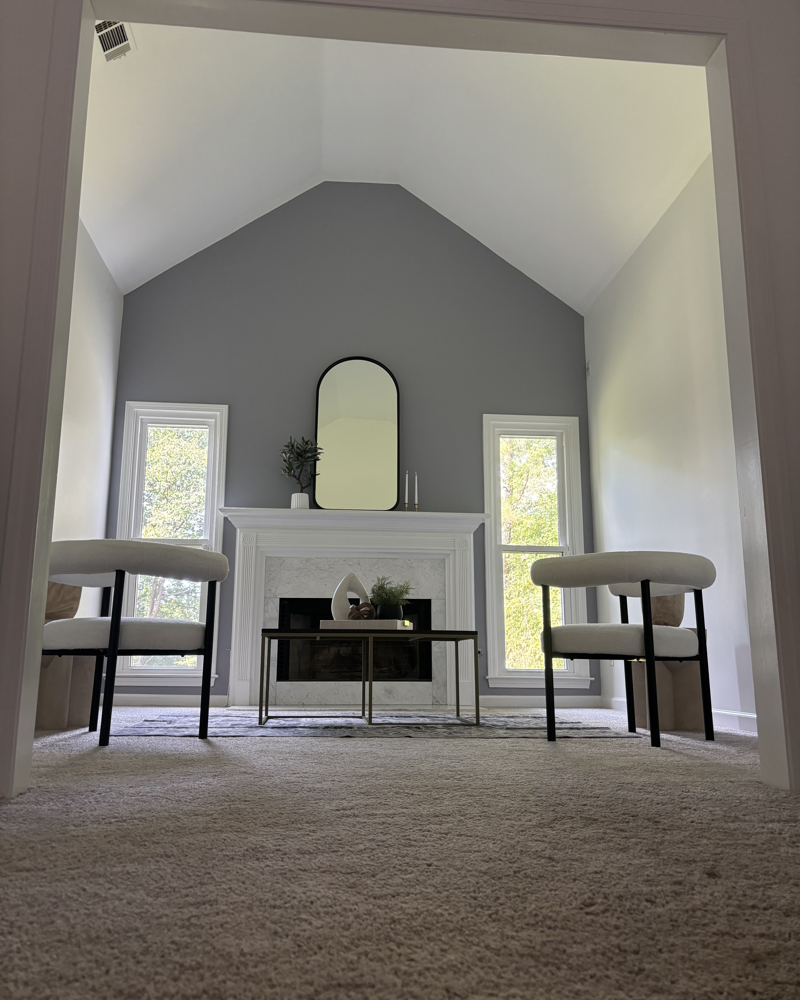

Looking for a reliable interior painter near you? Accentuated Walls specializes in high-quality accent wall painting for bedrooms, living rooms, and small spaces. We deliver clean lines, smooth finishes, and fast turnaround.
Why Choose Accentuated Walls?
- ✔ Affordable interior painting
- ✔ Fast scheduling – available this week
- ✔ Clean, professional results
- ✔ Perfect for small jobs and accent walls
Recent Accent Wall Projects

